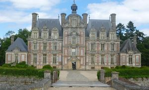
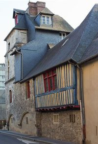
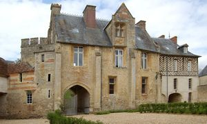
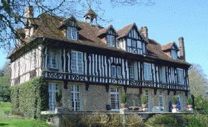
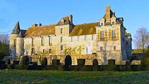
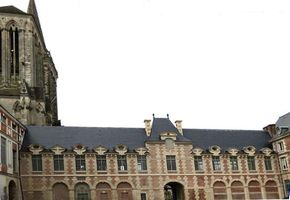

Recensement Jean-Claude Truffet
| Département | 14 — Calvados |
| Canton | Lisieux |
| Commune | Lisieux |
| Type d'édifice | Château |
| Période d'origine | XVI-XVII |
| Coordonnées GPS | 49° 08' 44,05" Nord, 0° 13' 17,18" Est PalaisGPS : 49° 08' 48" Nord, 0° 13' 34" Est Houblonniere GPS : 49° 07' 28" Nord, 0° 06' 15" Est Ouilly; |






Cinq édifices à Lisieux ; la tour Lambert, l'ancien palais, Bray, la Houblonnière et Ouilly. TOUR LAMBERT à Lisieux, la construction de la Tour Lambert date de 1491, de 1510 et de 1587. C'était un édifice fortifié. Le maitre d'oeuvre était Samaison Guillemot. La Tour Lambert est inscrite aux M.H. depuis le 19/05/1927. PALAIS épiscopal de Lisieux fut construit, en 1680, pour Léonor II Goyon de Matignon, Evêque de Lisieux, de l'évêché de Lisieux. En brique et en pierre, Après la séparation de l'Église et de l'État, l'ancien palais épiscopal , après la Révolution, il abrite depuis le Palais de Justice. De 1864 à 2002, il abrita également les fonds de la Bibliothèque municipale. L'Ancien Palais épiscopal est composé de briques et de pierres. A 4 K.M au sud est le manoir de BRAY à Glos, l'édifice est daté du XVIe siècle ou la fin du XVe siècle. Le site de la commune indique une construction au XVIIIe siècle et de larges remaniements au début du XXe siècle. propriété de M.N.B Dehshayes. Le manoir est inscrit au titre des M.H. depuis le 26 décembre 1928 en particulier les éléments suivants : élévation, toiture. Le manoir, légèrement asymétrique, s'organise autour d'une tour polygonale. Les deux ailes sont des constructions à pans de bois sur un premier niveau en pierre. L'étage est en encorbellement.
A 10 K.M à l'ouest, la HOUBLONNIERE Il s'agit d'un ancien château-fort remanié aux XVe et XVIe siècles, appartenait à la famille de Guérin au XVe siècle. On entre par une poterne en pierre de taille flanquée de deux échauguettes sur culots moulurés. La porte charretière et la porte piétonne sont surmontées de gâbles en accolade. Le donjon découronné dont l'appareil comprend des lits de brique disposés dans les murs en blocage défendait l'entrée, il est éclairé par des fenêtres à meneaux. Par la poterne on accède à la cour d'honneur fermée par un haut bâtiment en pierres de taille, percé d'un porche et épaulé de contrefort. Le logis en brique et pierre a conservé également ses fenêtres à meneaux. Cette habitation seigneuriale est aujourd'hui une ferme. Éléments protégés MH le château en totalité, inscription par arrêté du 19 janvier 1927. OUILLY DU HOULLEY A l'est de lisieux à 10 K.M. à Ouilly du Houlley, « Martin d'Ouillie, qui figure dans les rôles de l'échiquier de Normandie, à la date de 1180, fut, des plus lointains seigneurs de ce lieu, le seul dont on ait conservé le nom A la fin du XIIe siècle, le fief d'Ouilly-le-Ribauld devint la propriété de la puissante famille des Crespin qui possédait aussi la baronnie de Tillières. Reconstruit vers 1450, il cède une seconde fois pendant les guerres de religions. « C'était un 15 août 1592 et la garnison avait le droit de boire ce jour-là. » Reconstruit vers 1605 le château sera ensuite épargné Dans la cour intérieure au style renaissance avec sa tour octogonale, Le château offre un très grand intérêt. Il est construit sur la croupe d'un mamelon assez élevé, et sa masse carrée, vue des coteaux voisins, est fort imposante. François-Xavier Lebon.
Houblonnière,famille de Guérin Bray; M.N.B Dehshayes. Ouilly, famille des Crespin
"
Cinq édifice à lisieux ; la tour Lambert, l'ancien palais grav 6, Brais grav-4, la Houblonnière grav-3 et Ouilly grav-5. Tour GPS : 49° 08' 44,05" Nord, 0° 13' 17,18" Est PalaisGPS : 49° 08' 48" Nord, 0° 13' 34" Est Houblonniere GPS : 49° 07' 28" Nord, 0° 06' 15" Est Ouilly;
gps 49° 10' 17" Nord , 0° 19' 44" Est